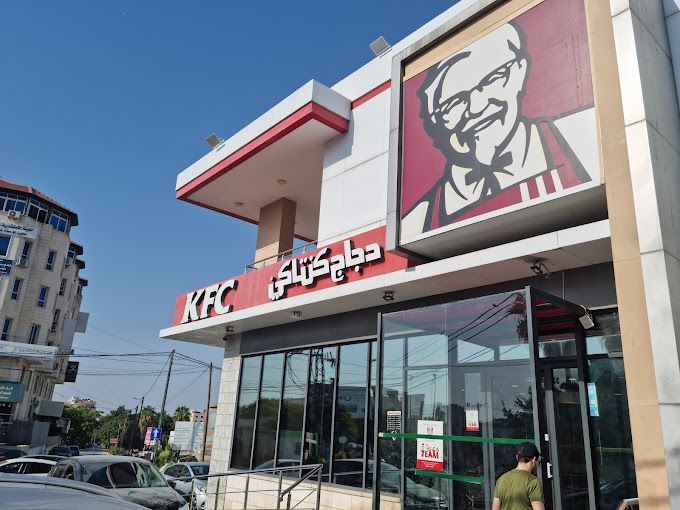

Kentucky Fried Chicken, more commonly known as KFC, is an iconic fast-food chain that has left an indelible mark on the global culinary landscape. Founded by Colonel Harland Sanders, KFC is renowned for its mouthwatering fried chicken, distinguished by its secret blend of 11 herbs and spices. The red and white bucket, synonymous with KFC, is a symbol of comfort food for many. With a presence in over 145 countries, KFC has successfully adapted its menu to cater to diverse tastes, offering not only their classic fried chicken, but also an array of sandwiches, wraps, and side dishes. KFC's commitment to quality and consistency has made it a household name, loved for its flavorful offerings that bring a taste of the American South to every corner of the world.
